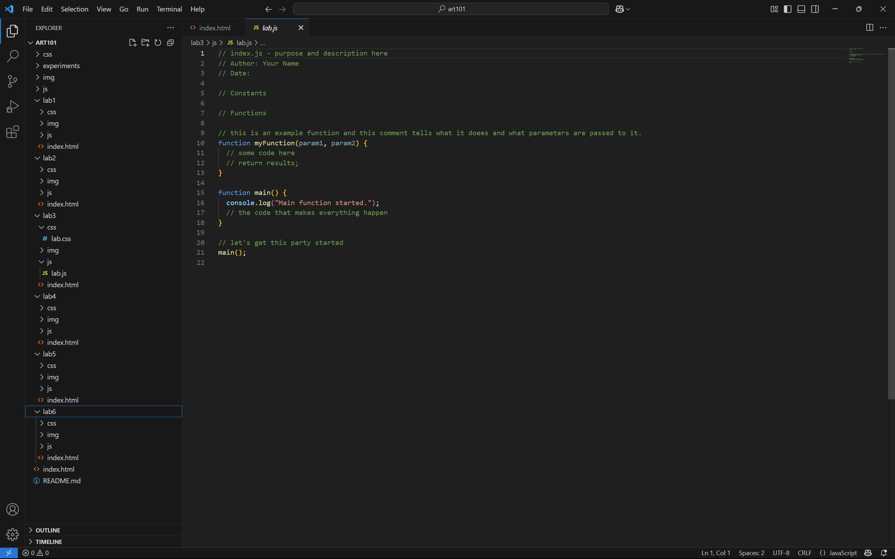
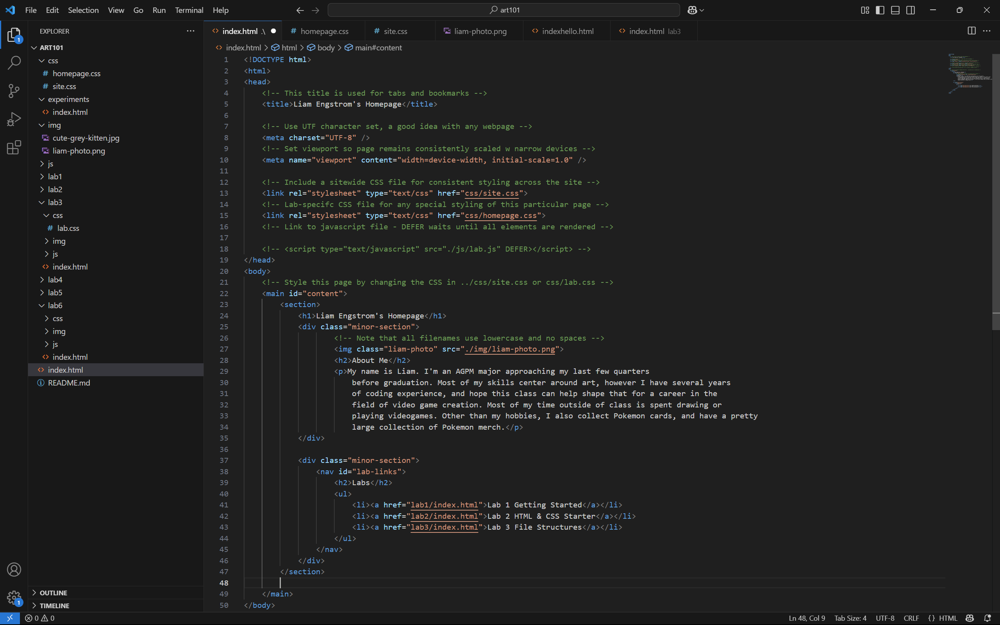
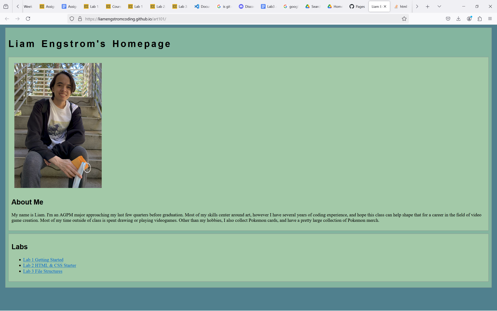
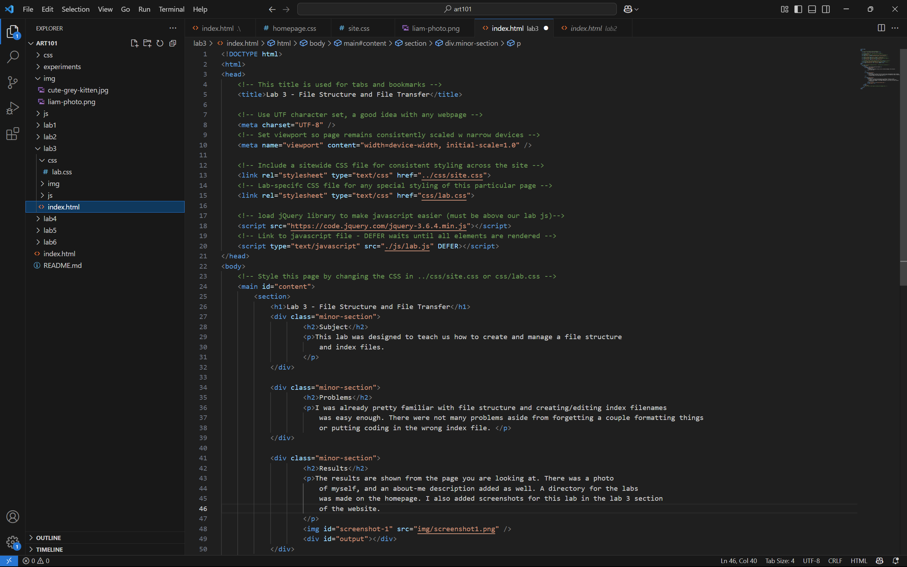
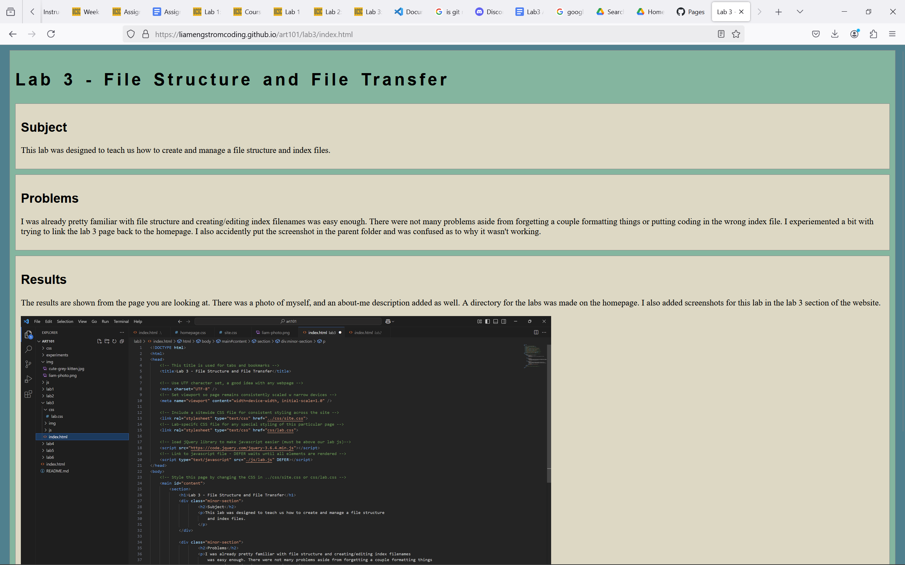

Lab 3 - File Structure and File Transfer
Subject
This lab was designed to teach us how to create and manage a file structure and index files.
Problems
I was already pretty familiar with file structure and creating/editing index filenames was easy enough. There were not many problems aside from forgetting a couple formatting things or putting coding in the wrong index file. I experiemented a bit with trying to link the lab 3 page back to the homepage. I also accidently put the screenshot in the parent folder and was confused as to why it wasn't working.
Results
The results are shown from the page you are looking at. There was a photo of myself, and an about-me description added as well. A directory for the labs was made on the homepage. I also added screenshots for this lab in the lab 3 section of the website.
Below is a screenshot showing the file structure for my project folder.

Below is a screenshot of the source code for the Homepage of my website, as well as a screenshot of the resulting webpage from that code


Below is a screenshot of the source code for the lab 3 section of the website (the one you are currently looking at) and the webpage

